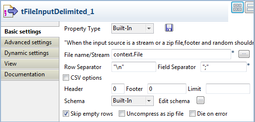
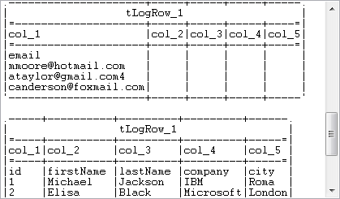

|
Component family |
System | |
|
Function |
tRunJob executes the Job called in the component’s properties, in the frame of the context defined. | |
|
Purpose |
tRunJob helps mastering complex Job systems which need to execute one Job after another. | |
|
Basic settings |
Schema and Edit Schema |
A schema is a row description. It defines the number of fields to be processed and passed on to the next component. The schema is either Built-in or stored remotely in the Repository. Click Edit Schema to make changes to the schema. Note that if you make changes, the schema automatically becomes built-in. If you are using Talend Open Studio for Big Data, only the Built-in mode is available. |
|
|
|
Built-in: You create and store the schema locally for this component only. Related topic: see Talend Open Studio User Guide. |
|
|
|
Repository: You have already created the schema and stored it in the Repository. You can reuse it in various projects and Job designs. Related topic: see the user guide of the integration Studio. |
|
|
Use dynamic job |
Select this check box to allow multiple Jobs to be called and processed. When this option is enabled, only the latest version of the Jobs can be called and processed. An independent process will be used to run the subjob. The Context and the Use an independent process to run subjob options disappear. WarningThe Use dynamic job option is not compatible with the Jobserver cache. Therefore, the execution may fail if you run a Job that contains tRunjob with this check box selected in . WarningThis option is incompatible with the Use or register a shared DB Connection option of database connection components. When tRunJob works together with a database connection component, enabling both options will cause your Job to fail. |
|
|
Context job |
This field is visible only when the Use dynamic job option is selected. Enter the name of the Job that you want to call from the list of Jobs selected. |
|
|
CopyChild Job Schema |
Click to fetch the child Job schema. |
|
|
Job |
Select the Job to be called in and processed. Make sure you already executed once the Job called, beforehand, in order to ensure a smooth run through tRunJob. |
|
|
Version |
Select the child Job version that you want to use. |
|
|
Context |
If you defined contexts and variables for the Job to be run by the tRunJob, select the applicable context entry on the list. |
|
|
Use an independent process to run subjob |
Select this check box to use an independent process to run the subjob. This helps in solving issues related to memory limits. WarningThis option is not compatible with the Jobserver cache. Therefore, the execution may fail if you run a Job that contains tRunjob with this check box selected in . WarningThis option is incompatible with the Use or register a shared DB Connection option of database connection components. When tRunJob works together with a database connection component, enabling both options will cause your Job to fail. |
|
|
Die on child error |
Clear this check box to execute the parent Job even though there is an error when executing the child Job. |
|
|
Transmit whole context |
Select this check box to get all the context variables from the parent Job. Deselect it to get all the context variables from the child Job. |
|
|
Context Param |
You can change the selected context parameters. Click the plus button to add the parameters as defined in the Context of the child Job. For more information on context parameters, see Talend Open Studio User Guide. |
|
Advanced settings |
Print Parameters |
Select this check box to display the internal and external parameters in the Console. |
|
|
tStatCatcher Statistics |
Select this check box to gather the processing metadata at the Job level as well as at each component level. |
|
Usage |
This component can be used as a standalone Job or can help clarifying complex Job by avoiding having too many sub-jobs all together in one Job. | |
|
Global Variables |
|
Child return code: Indicates the Java return code of the child Job. This is available as an After variable. Returns an integer: - if no errors > the code value is 0. - if errors > an exception message shows.
Child exception stack trace: Returns a Java stack trace from a child Job. This is available as an After variable. Returns a string.
For further information about variables, see Talend Open Studio User Guide. |
|
|
|
Outgoing links (from one component to another): Row: Main. Trigger: On Subjob Ok; On Subjob Error; Run if; On Component Ok; On Component Error
Incoming links (from one component to another): Row: Main; Reject; Iterate. Trigger: On Subjob Ok; On Subjob Error; Run if; On Component Ok; On Component Error; Synchronize; Parallelize.
For further information regarding connections, see Talend Open Studio User Guide. |
|
Limitation |
n/a | |
This scenario describes a two-component Job that calls another Job, which is the child Job, to display the content of files specified in the parent Job on the Run log console.

Procedure 19.1. Dropping and linking components
Drop a tFileInputDelimited and a tLogRow from the Palette to the design workspace.
Connect the two components together using a Row > Main link.
Procedure 19.2. Configuring the components
Double-click tFileInputDelimited to open its Basic settings view and define its properties.
Click in the File Name field and then press F5 to open the [New Context Parameter] dialog box and configure the context variable.

In the Name field, enter a name for this new context variable, File in this example.
In the Default value field, enter the full path to the default input file.
Click Finish to validate the context parameter setup and fill the File Name field with the context variable.
Note
You can also create or edit a context parameter in the Context tab view beneath the design workspace. For more information, see Talend Open Studio User Guide.
Click the [...] button next to Edit schema to open the [Schema] dialog box where you can configure the schema manually.
In the dialog box, click the [+] button to add columns and name them according to the input file structure.
In this example, this component will actually read files defined in the parent Job, and these files contain up to five columns. Therefore, add five string type columns and name them col_1, col_2, col_3, col_4, and col_5 respectively, and then click OK to validate the schema configuration and close the [Schema] dialog box.
Double-click tLogRow to display its Basic settings view and define its properties.
Select the Table option to view displayed content in table cells.
Procedure 19.3. Dropping and linking components
Drop a tFileList and a tRunJob from the Palette to the design workspace.
Connect the two components together using an Iterate link.
Procedure 19.4. Configuring the components
Double-click tFileList to open its Basic settings view and define its properties.

In the Directory field, specify the path to the directory that holds the files to be processed, or click the [...] button next to the field to browse to the directory.
In this example, the directory is called tRunJob and it holds three delimited files with up to five columns.
In the FileList Type list, select Files.
Check that the Use Glob Expressions as Filemask check box is selected, and then click the [+] button to add a line in the Files area and define a filter to match files. In this example, enter
“*.csv”to retrieve all delimited files.Double-click tRunJob to display its Basic settings view and define its properties.

Click the [...] button next to the Job field to open the [Find a Job] dialog box.

Select the child Job you want to execute and click OK to close the dialog box. The name of the selected Job appears in the Job field.
In the Context Param area, click the plus button to add a line and define the context parameter. The only context parameter defined in the child Job, named File, appears in the Parameter cell.
Click in the Values cell, press Ctrl+Space on your keyboard to access the list of context variables, and select tFileList-1.CURRENT_FILEPATH.
The corresponding context variable appears in the Values cell:
((String)globalMap.get(“tFileList-1.CURRENT_FILEPATH”)).Note
For more information on context variables, see Talend Open Studio User Guide.
Press Ctrl+S to save your Job.
Press F6 to execute the Job.
The parent Job calls the child Job, which reads the files defined in the parent Job, and the content of the files is displayed on the Run console.
Related topic: the section called “tLoop”, and the section called “Scenario 1: Buffering data” of the tBufferOutput component.